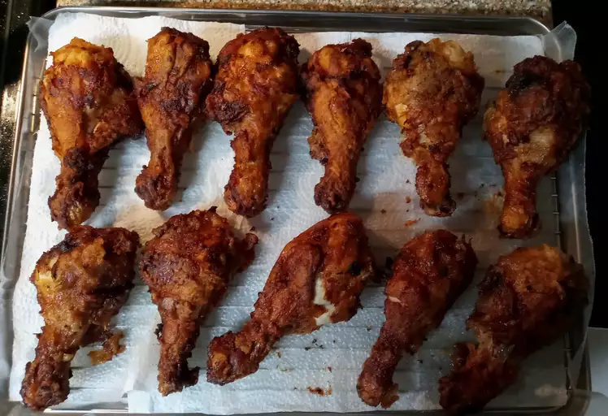

Fried Chicken

Description
This is the only crispy fried chicken recipe you'll ever need. Why? It combines all the tried-and-true tricks to ensure the juiciest, most flavorful, crispiest chicken every time.
Most fried chicken is cooked at a high temperature throughout the frying process. This one, however, only starts at a very high heat — after browning, the heat is reduced for about 30 minutes. You'll turn up the temperature again at the end, locking in that crispy texture.
Paprika adds smoky flavor and has a low smoke point, which helps with browning the chicken.
Ingredients:
- Chicken
- Buttermilk
- Flour
- Seasonings
- Oil
Steps:
- Take you cut up chicken pieces and skin them if you prefer.
- Put the flour in a large plastic bag. Season the flour with paprika, salt, and pepper.
- Dip chicken pieces in buttermilk, after some time put them in the bag with the flour, seal the bag and shake it to coat well.
- Place the coated chicken on a cookie sheet or tray, and cover with a clean dish towel or waxed paper.Let sit until the flour is of a paste like consistency.
- Fill a large skillet about 1/3 to 1/2 full with vegetable oil. Heat until very hot
- Put in as many chicken pieces as the skillet can hold. Brown the chicken in hot oil on both sides.
- When browned, reduce the heat and cover the skillet; let cook for 30 minutes. Remove cover, raise heat again, and continue to fry until crispy.
- Drain the fried chicken on paper towels. Depending on how much chicken you have, you may have to fry in a few shifts.